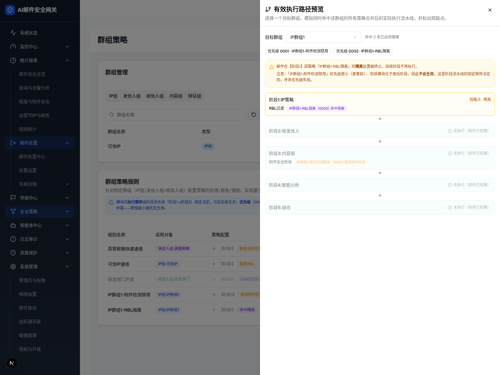

| 所属组件 | 2.4 有效执行路径预览弹窗 EffectivePathDialog |
| 主文件 | filter-rules-group-policy/index.html |
| 触发路径 | 群组策略规则卡片 →「有效执行路径预览」→ 目标群组选 IP群组1 |
| demo 源 | group-policy-page.tsx EffectivePathDialog L971-L1205 |
触发路径：点「有效执行路径预览」→ 弹窗；目标群组 Select 选「IP群组1」→ 计算逐阶段生效路径与短路点
目标群组下拉可切换（高管邮箱=5 阶段全执行；IP群组1=阶段1 短路）；本图为 IP群组1 短路态
选择一个目标群组，模拟同时命中该群组的所有策略合并后的实际执行流水线，并标出短路点。
邮件在【阶段1】因策略「IP群组1-RBL隔离」的隔离处置被终止，后续阶段不再执行。
注意：「IP群组1-附件检测禁用」优先级更小（更靠前）， 但其模块位于更后阶段，因此不会生效。这是阶段流水线的固定顺序决定的，并非优先级失效。

| 元素 | 说明 |
|---|---|
| 抽屉 | 右侧 max-w-3xl；头部 GitBranch 图标 +「有效执行路径预览」+ 说明 |
| 目标群组 Select | 汇总所有规则 targetGroups 的去重群组名；默认首个（高管邮箱） |
| 命中计数 | 「命中 N 条已启用策略」（enabled 且命中该组，按优先级升序） |
| 命中策略 Badge | 优先级 0000 · 规则名 |
| 短路横幅 | 存在终态处置(隔离/拒绝/阻断/丢弃)时：amber 横幅说明在【阶段X】被终止；并解释更高优先级但位于后阶段的规则「不会生效」 |
| 阶段时间线 | 阶段1→5 卡片；每卡：执行/短路点·动作/未执行（前序已短路）/无群组配置；同模块冲突→优先级仲裁说明 |
| 本图（IP群组1） | 命中2条：IP群组1-附件检测禁用(0001,阶段3) + IP群组1-RBL隔离(0002,阶段1)；阶段1 命中隔离即短路，阶段2-5 未执行 → 阶段3 的附件禁用不生效。该短路由阶段顺序决定（阶段1 早于阶段3），与优先级方向无关 |
| 比对项 | demo 实际 DOM | 嵌入 spec 的 HTML | 是否一致 |
|---|---|---|---|
| 外层 | div.fixed.inset-0.z-50 + max-w-3xl | .gp-shell + max-w-3xl | ⚠ 有意差异 |
| 节点总数（IP群组1 态） | 101 | 101 | ✅ |
| 目标群组 Select | 1 | 1（合成菜单：高管邮箱/可信IP/研发部门/IP群组1） | ✅ |
| 短路横幅 | IP群组1：渲染（阶段1 隔离短路） | 已包含 | ✅ |
| 阶段时间线卡 | 5（阶段1 短路点，2-5 未执行） | 5 | ✅ |